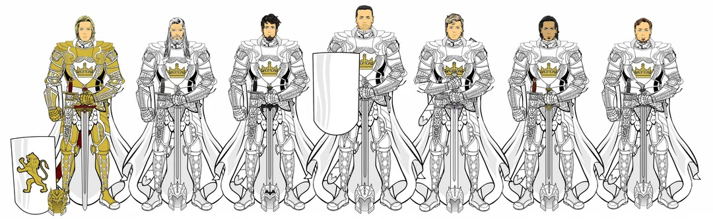

About this project

The Kingsguard of Aerys II
The Kingsguard is a legendary institution with a history of nearly 300 years, originally founded by Aegon the Conqueror to protect the royal family. The specific group of seven knights sworn to King Aerys II Targaryen is widely considered to be the greatest iteration of the white cloaks ever assembled at a single time. They were the absolute epitome of honor, martial prowess, and chivalry. However, they represent one of the most fascinating and tragic paradoxes in the lore: the most honorable and capable men in the realm were bound by sacred, unbreakable vows to guard the worst, most unhinged king to ever sit the Iron Throne.
Data and Attribution
All characters, concepts, and overarching lore are the original works of author George R.R. Martin. The copyrights and intellectual property associated with the A Song of Ice and Fire franchise and its adaptations are the property of Warner Bros. and HBO. The character profiles, images, and data utilized in this gallery are used for educational purposes as part of a homework assignment. All historical lore and character information were sourced directly from the original book series and the comprehensive A Wiki of Ice and Fire.